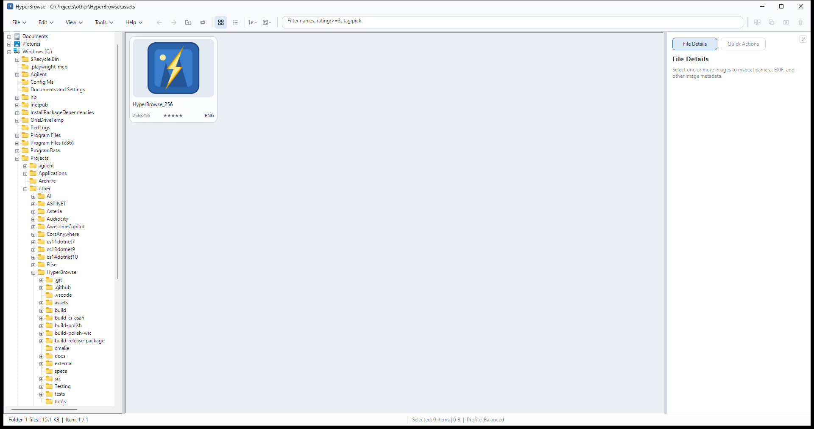

Quick start
- Choose File > Open Folder, or press Ctrl + O.
- Select a folder in the tree. HyperBrowse shows a loading state immediately, then fills the browser as images are found.
- Double-click an image, or select it and choose File > Open, to open the separate viewer.
- Use the Help > User Guide command or press F1 whenever you need this guide again.
docs folder from the executable.
Browse and select images
Choose a view
- Thumbnail mode is the fastest way to scan a folder visually. Change the thumbnail size from the action strip or View > Thumbnail Size.
- Details mode is useful for comparing filenames, dates, dimensions, file sizes, ratings, and tags.
- The details strip shows information for the current selection. It can be toggled from View > Details Strip.
- Use View > Show Subfolders to include folder entries while browsing.
Find and arrange
- Type in the filter field to narrow the current folder by filename.
- Use View > Sort to sort by filename, modified date, file size, dimensions, type, date taken, rating, tags, or random order.
- Change sort direction with View > Sort > Ascending/Descending.
- Turn on View > Recursive Browsing when the current folder and its descendants should be treated as one image collection.
Selection and drag-and-drop
Use Ctrl-click to add or remove individual items, Shift-click for a range, and Ctrl + A to select all visible items. Selected files can be dragged to a folder in the tree or to another shell-aware application such as File Explorer. Dropping files onto HyperBrowse can open an image in the viewer or copy files into the current folder, depending on where they are dropped.
Right-click a selection for copy, move, delete, rename, duplicate, properties, ratings, tags, image information, and other actions. Shift-right-click opens the Windows shell context menu.
Review images in the viewer
The viewer is a separate window so the browser remains available while you review images. Use the left and right arrow keys, the toolbar, or the edge navigation controls to move through the current collection.
View controls
- Use the mouse wheel or the zoom commands to zoom. Fit to Window restores a complete-image view, while 100% shows pixels at their native size.
- Pan a zoomed image by dragging it. Rotate with the viewer rotate commands.
- Double-click the viewer or use the fullscreen command for a chrome-free review.
- The info overlay shows image state without leaving the viewer. Choose a small, medium, or large overlay size.
Compare and inspect
- Select two images and choose File > Compare Selected for a side-by-side comparison.
- Open the full metadata pane when EXIF, IPTC, or XMP details need more room.
- When a RAW file has a paired JPEG, HyperBrowse can include the pair in file operations and apply the selected viewer preference.
- Deleting the displayed image advances to the next available image when possible.
Run a slideshow
Start from the current selection with View > Slideshow > From Selection, or show the current folder with From Folder. Configure the interval and transition style in View > Slideshow > Settings.
Slideshow transitions include cut, crossfade, slide, and Ken Burns styles. Slideshow scope follows the current recursive-browsing setting. The viewer can open on a secondary monitor when that preference is enabled.
Manage files
Everyday operations
- Copy and Move use Windows shell operations and can target the current folder, a recent destination, or a favorite destination.
- Delete sends files to the Recycle Bin. Use Shift + Delete for permanent deletion.
- Rename supports a selected image or inline folder renaming. F2 starts the common rename action.
- Duplicate copies selected files into the same folder with an automatic numeric suffix.
- Use Ctrl + C and Ctrl + V to copy and paste files through the Windows clipboard.
Image operations
- Batch convert a selection or the current folder to JPEG, PNG, or TIFF.
- JPEG orientation adjustment changes EXIF orientation metadata. It does not claim to be a lossless pixel rotation.
- Use Ctrl + Shift + I to copy the displayed image pixels to the clipboard.
- Use Edit > Undo and Edit > Redo for recent copy, move, and rename operations. Recycle Bin deletes remain recoverable through Windows.
Use Quick Send
Quick Send keeps frequently used destinations close to the viewer. Open the Quick Send panel, add favorite folders, and assign each one a key from 0 through 9 or A through Z.
- Press F7 to move the displayed image to a favorite destination.
- Press F8 to copy the displayed image to a favorite destination.
- The same commands work with selected files in the browser.
- Paired RAW/JPEG files are included when paired operations are enabled.
- Assignments are remembered by folder path, even when the favorite list is reordered.
Formats and metadata
HyperBrowse uses Windows Imaging Component for common formats and LibRaw for supported RAW formats. JPEG, PNG, GIF, and TIFF files use the standard Windows decode path. RAW support includes ARW, CR2, CR3, DNG, NEF, NRW, RAF, and RW2.
JPEG EXIF orientation is applied automatically when images are displayed. Metadata surfaces expose EXIF, IPTC, and XMP information when it is present. GIF and TIFF browsing uses the first frame or page.
Settings and performance
Most preferences live in the View menu and are remembered per user. Light and dark themes, app text size, thumbnail size, compact layout, thumbnail details, recursive browsing, viewer behavior, slideshow settings, and RAW/JPEG preferences can be changed without restarting.
- View > App Text Size changes HyperBrowse's browser, details-panel, native-control, diagnostic, and custom-dialog text. Choose Small, Medium, or Large; Medium preserves the default size.
- View > Viewer > Overlay Text Size is independent from the app text size and changes only the information overlay inside the viewer.
- Help > Performance > Performance Profile offers Conservative, Balanced, Performance, and Aggressive profiles. Aggressive uses more lookahead, worker queue capacity, and adaptive cache space for systems with spare memory.
- Help > Performance > Performance Settings exposes adaptive cache and worker overrides.
- View > Advanced > Persistent Thumbnail Cache enables the disk cache.
- View > Advanced > Persistent Cache Stats and Cleanup shows cache usage and provides compact and purge actions.
- Help > Diagnostics can capture a snapshot or reset diagnostic state when investigating a problem.
For large folders, leave the Balanced profile enabled first. Thumbnail work, metadata extraction, and folder enumeration continue in the background while the window remains interactive. Performance and Aggressive are intended for systems with spare CPU and memory; memory pressure automatically reduces viewer lookahead and trims active caches.
Keyboard shortcuts
| Shortcut | Action |
|---|---|
| F1 | Open this user guide |
| Ctrl + O | Open folder |
| F2 | Rename the selected item |
| F5 | Refresh the folder tree |
| Backspace | Return to the previous folder |
| Ctrl + A | Select all visible browser items |
| Ctrl + C | Copy selected files to the clipboard |
| Ctrl + V | Paste files into the current folder |
| Ctrl + D | Duplicate the selection |
| Ctrl + Z / Ctrl + Y | Undo / redo a supported file operation |
| F7 / F8 | Quick Send: move / copy |
| Delete | Move the selection to the Recycle Bin |
| Shift + Delete | Delete the selection permanently |
| Ctrl + Shift + I | Copy displayed image pixels |
| Esc | Minimize the main window or close the viewer |
Menu labels show shortcuts where they are available. Some actions also have viewer-specific keyboard behavior; when the viewer has focus, its navigation and zoom commands take priority.
Troubleshooting
The guide does not open
Keep the docs folder with the executable. Installed copies normally place the guide in the application docs folder beside bin; portable copies place it in docs beside HyperBrowse.exe. HyperBrowse uses the executable location, not the current working directory, to find it.
An image cannot be decoded
Confirm that the file uses a supported format. For RAW images, check whether the optional helper is present beside the application and try the in-process fallback from View > Advanced. Unsupported RAW variants may still show no preview.
Browsing a large folder feels busy
Allow the initial enumeration to finish, then adjust the Performance Profile if needed. Persistent thumbnail cache maintenance is available under View > Advanced. The diagnostics snapshot under Help can capture state for a bug report.
Where are settings stored?
User settings are stored under HKCU\Software\HyperBrowse. Portable mode does not make settings portable; the application still uses the current Windows user's profile.
About this guide
This guide is versioned with HyperBrowse and describes the features shipped in the same release. The project source and issue tracker are available at github.com/thetheosopher/HyperBrowse.